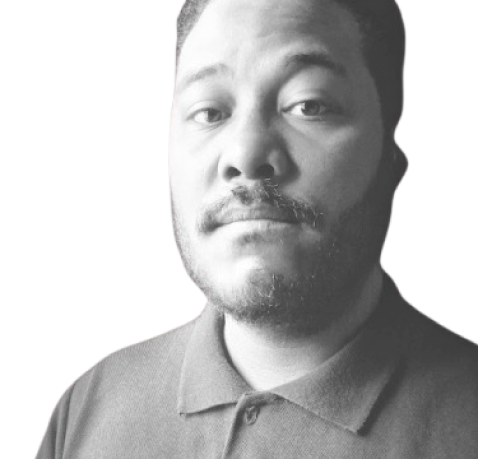

Conheça
Dimitry Machado Marinho
31 anos Desenvolvedor Front-End

31 anos Desenvolvedor Front-End
DesenvolvedorFront End
Eu sou formado em ciência da computação em 2019. Foi onde eu aprendi
nessa programação os conceitos de algoritmo, estrutura de dados, banco
de dados.

Jogar Video-Games é uma ocupação que me diverte a muitos anos
Passar tempo de qualidade com minha esposa não tem preço!
Desenhar é algo que fiz durante toda minha vida e gosto bastante!
Motivações Front End
Gosto bastante da parte de front-end, de design. Eu estou querendo entrar no mercado de trabalho agora. Poder agregar minha experiencia em grupos de desenvolvimento, e ganhar experiencia prática é minha maior fonte de motivação e eu sou uma pessoa que tem facilidade em aprender e em lidar com as pessoas, eu trabalho muito bem em equipe.